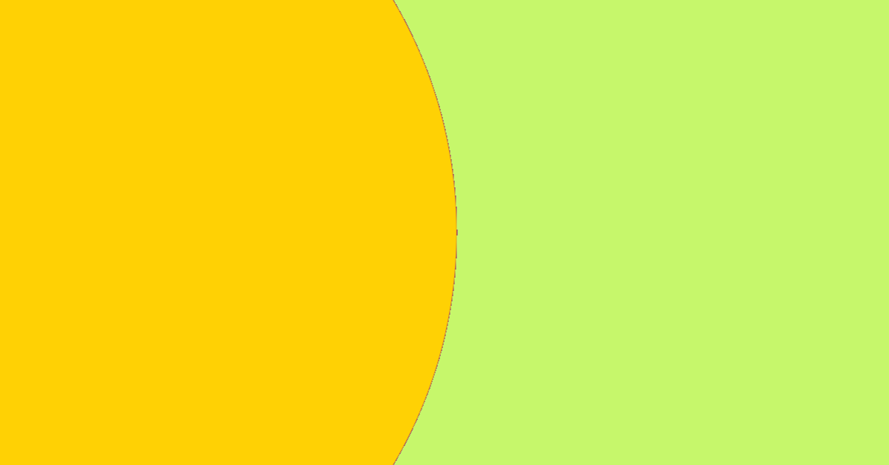

Thumbnail Design - Click-Worthy Thumbnails Kaise Banayein
परिचय
Thumbnail ही view का 50% तय करती है. Color, contrast aur eye-catching face expression sab important hai.
Design Rules
- Use bold readable text
- High saturation and contrast
- Face with emotion (close-up)
- Keep central subject and small borders
Tools
Canva, Photoshop, Pixlr, Mobile apps
Download thumbnail templates: Template Pack
Published by 5yberBind • © 2025